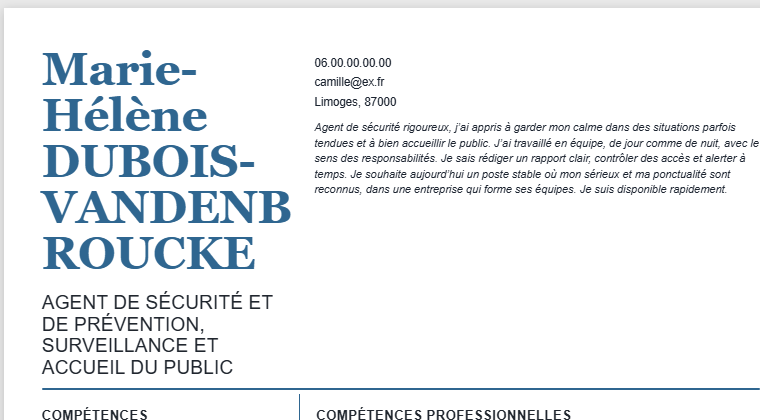
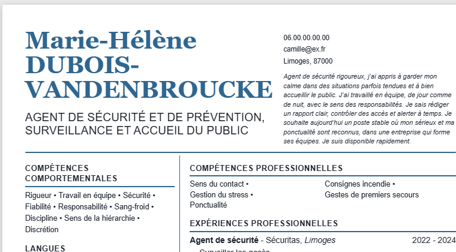
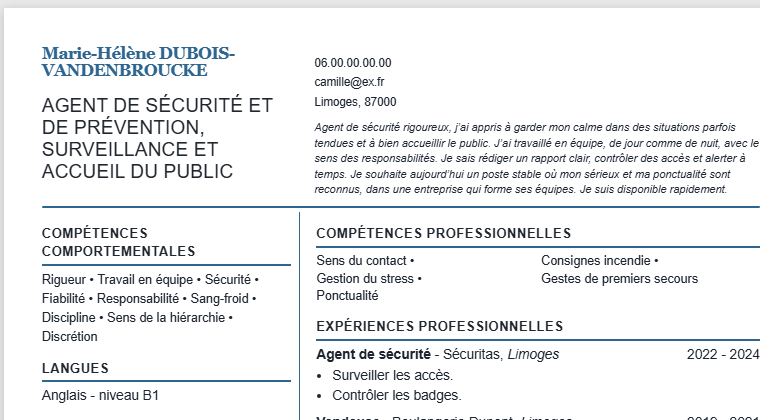
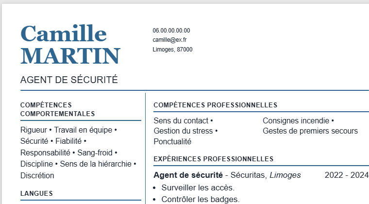
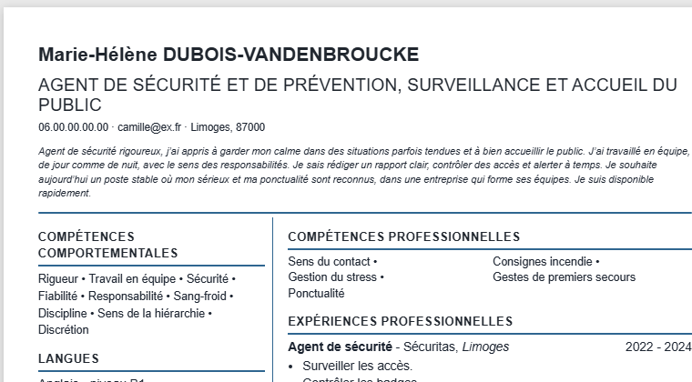
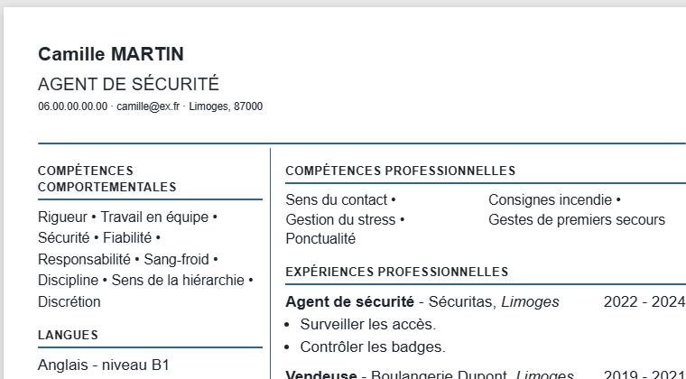

Maquette : le modèle « Éditorial » quand le nom et le titre sont longs
Contenu d'essai : « Marie-Hélène DUBOIS-VANDENBROUCKE », titre sur 12 mots, accroche de 5 lignes. Les images viennent du vrai rendu de l'application (aperçu réduit au haut de la page). Rien n'est codé.
Ce qui est déjà réglé : « Chrono foncé »
Avec un contenu long, son en-tête prenait 34 % de la page (trop). Il vient d'être ramené à 24 %, sans changer son dessin : l'agrandissement automatique de 15 % ne reste plus quand il rend l'en-tête trop grand. Aucune maquette n'est nécessaire pour lui. Ne pas mettre l'« Empilée » dessus : le titre passerait sous la colonne sombre, en texte sombre sur fond sombre (illisible).
Le problème de « Éditorial »
Son nom est écrit en très grands caractères à gauche. Un nom composé long se coupe en pleine lettre (« VANDENB / ROUCKE ») et l'en-tête monte à 40 % de la page : un tiers de la feuille avant la première rubrique.

Aujourd'hui, nom longMot coupé, 40 % de la page.
 Aujourd'hui, nom court
Aujourd'hui, nom courtTrès beau : c'est la signature du modèle. À ne pas changer.
Option D (recommandée) : on combine A et B, par paliers
Trois gestes, dans cet ordre, et seulement quand le nom est long :
- 1. Un mot n'est jamais coupé en pleine lettre (la cause du « VANDENB / ROUCKE » est une règle de césure trop permissive).
- 2. La zone du nom s'élargit (jusqu'à 58 % de la largeur) et le nom rapetisse juste assez pour que le plus long mot tienne.
- 3. Si l'en-tête dépasse encore 30 % de la page, on passe à la disposition « Empilée » (option B), déjà codée.

Nom longLe nom garde presque sa taille d'origine (41 px au lieu de 46 px), aucun mot coupé, en-tête à 22 % de la page (mesuré). L'accroche reste lisible (288 px de large).
Nom courtInchangé, exactement comme aujourd'hui.
Avantage C'est la seule option qui garde le grand nom de couleur d'« Éditorial » même avec un nom composé long, sans mot coupé. L'« Empilée » reste un filet de sécurité pour les cas extrêmes.
Limite Dans l'en-tête seulement, la séparation entre le nom et les coordonnées n'est plus alignée avec la colonne du corps du CV (visible sur l'image). Risque technique : moyen, un réglage d'ajustement qui se calcule après l'affichage (comme celui de l'Empilée) ; il faut vérifier le PDF et le Word.
Option A : le nom rapetisse seulement quand il ne tient pas

Nom longLe nom est réduit juste assez pour que le plus long mot tienne sur une ligne. En-tête à environ 22 % de la page (estimé sur la capture). Le style « Éditorial » (nom en lettres serif de couleur, titre en capitales) est gardé.

Nom courtInchangé, exactement comme aujourd'hui.
Avantage Le modèle garde son dessin ; les noms courts ne bougent pas ; aucun mot n'est coupé.
Limite Avec un nom très long, le nom devient petit (le « grand nom » n'est plus la vedette de la page). Risque technique : faible (un réglage de taille pour ce seul modèle).
Option B : passer à la disposition « Empilée » quand le nom est long

Nom longPhoto et nom sur une ligne, titre pleine largeur, coordonnées et accroche dessous. En-tête à 23 % de la page.

Nom court, si on l'imposaitPour montrer le contraste : on ne le ferait que pour les noms longs.
Avantage Un en-tête compact et très lisible ; mécanisme déjà codé (choix automatique de l'Empilée).
Limite Le CV ressemble à un autre modèle : il perd le grand nom de couleur, ce qui fait la personnalité d'« Éditorial ». Deux CV du même modèle auraient deux allures très différentes selon la longueur du nom.
Option C : ne rien faire pour « Éditorial »
Avantage Aucun risque, aucun code.
Limite Un mot coupé en pleine lettre et un tiers de page pris dès qu'un nom est long ; cela arrive pour les noms composés.